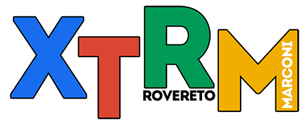

Ciao!
Sei nel sito ufficiale della squadra Marconi Xtrm, che partecipa alla competizione di robotica FIRST® LEGO® League (FLL) per l'edizione 2014/2015.

Cos'è la FLL?
La FLL è una competizione internazionale a squadre di scienza e robotica, a cui partecipano ragazzi dai 9 ai 16 anni da tutto il mondo. Ci sono infatti più di 20˙000 squadre iscritte, per più di 250˙000 ragazzi.
Non solo robotica!
I partecipanti non devono soltanto progettare, costruire e programmare un robot autonomo, ma anche applicare le conoscenze acquisite a problemi reali per trovare soluzioni innovative.
La FLL, in pratica
La FLL si organizza quindi in 4 parti, ciascuna delle quali ha uguale importanza nel punteggio complessivo.
Robot Game
il robot LEGO deve spostarsi sul percorso del tavolo di gara e accumulare il maggior numero di punti, completando delle missioni, in 2 minuti e mezzo.
Robot Design
una giuria di esperti valuta le scelte della squadra nella costruzione e nella strategia di gara.
Project
la squadra deve realizzare e presentare una ricerca scientifica legata al tema dell'anno e sviluppare una soluzione innovativa.
Core Values
valutazione dei "valori" della squadra, cioè i rapporti interni, con i coach e con le altre squadre ("coopertition").
Il tema per il 2014
Il tema dell'anno della FLL è stabilito dalla Challenge. Per il 2014, il progetto da realizzare prende il nome di "WORLD CLASS℠"

Come migliorare l'esperienza di apprendimento?
Le squadre devono elaborare una ricerca e trovare una soluzione che risponda alla domanda WORLD CLASS℠.
How could we improve the way that someone learns [topic]?
La domanda "WORLD CLASS"
Come possiamo migliorare il modo in cui gli studenti della scuola secondaria imparano nuovi argomenti delle materie essenziali?
La lezione frontale è poco efficace: gli studenti si limitano ad ascoltare l'insegnante e si annoiano, non riuscendo a rimanere attenti.
"Miscere utile dulci"
Il poeta Orazio lo diceva duemila anni fa e l'idea si applica facilmente al campo dell'istruzione. La risposta alla nostra domanda è quindi:
Intrattenere gli studenti
La nostra soluzione
L'idea è di rendere la lezione più stimolante, per tutti gli studenti.
Prendiamo come esempio una lezione in cui si svolgono degli esercizi di inglese o di grammatica italiana.
Come si può coinvolgere l'intera classe?
La nostra soluzione prevede un dispositivo elettronico con quattro pulsanti. L'insegnante può porre una domanda e le possibili risposte ed ogni studente ha la possiblità di rispondere.
Perché la nostra soluzione migliora l'apprendimento?
Il prototipo della soluzione
Abbiamo realizzato un prototipo della nostra soluzione.
Il dispositivo accennato è stato realizzato con una board elettronica, che invia i dati al ricevitore, cioè un server che visualizza i risultati su una pagina web.
L'insegnante può, dalla sua postazione, configurare il sistema e vedere e analizzare i risultati.
Soluzione: il trasmettitore
Il trasmettitore (o telecomando) è il dispositivo che gli studenti usano per rispondere alla domanda
La board elettronica che gestisce il sistema è Spark Photon, una piccolissimo dispositivo dotato di connettività Wi-Fi al quale si possono collegare tutti gli accessori, shield e moduli compatibili con Arduino.
Spark Photon costa solo 15 €
Soluzione: il ricevitore
Il ricevitore, o server, consiste in una pagina web che riceve e organizza i dati delle risposte date dagli studenti
Il software è completamente libero
Per l'insegnante sarà facile farsi un'idea della situazione della classe
Perché XTRM Feedback?
La lezione frontale è ormai superata. La didattica alternativa si sta diffondendo nelle scuole. La nostra soluzione vuole aiutare questa tendenza.
Applicando il concetto di
Flipped classroom
cioè "classe capovolta", sono gli studenti che fanno la lezione. Si preparano un argomento e a scuola, con i nostri dispositvi, si sfidano ponendo domande ai gruppi avversari.
In questo modo, si garantisce una preparazione autonoma da parte di ciascuno studente e allo stesso tempo un clima di gioco e collaborazione.